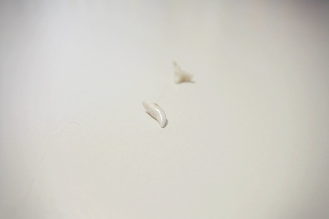
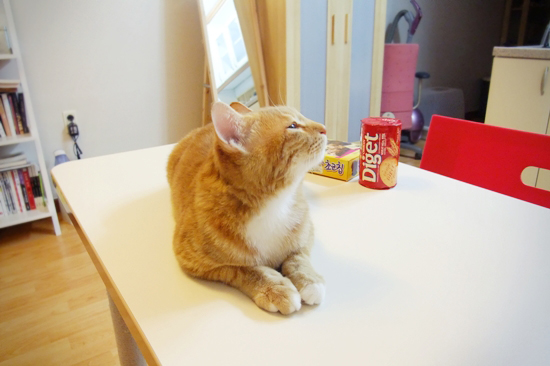

망고의 이갈이 흔적. 말하자면, 헌 이 득템.
(앞이 송곳니, 뒤가 어금니)
관련 포스트: 득템
망고는 간장과 대략 11개월 터울이라
지난 해 간장이 겪었던 일들을 한 달 먼저 치르고 있다.
덕분에 키우는 입장에선 여러모로 수월하다.
작년 이맘 때 간장의 행실을 참고하면 거의 예측가능하거니와
이글루스에 기록도 찬찬히 남겨 두었으니... ^-^.
간장은 돌이 지나도록 어린 티를 벗지 못하고 찡찡대다가
망고라는 동생이 생기고 나서야 비로소 철이 들었다.
그래서 망고도 걱정이다.
지가 막내인 걸 아는 눈친데 평생 철들지 않음 어쩌나.
.
.
.
(뿌우-) 철분 따위 개나 주라지.